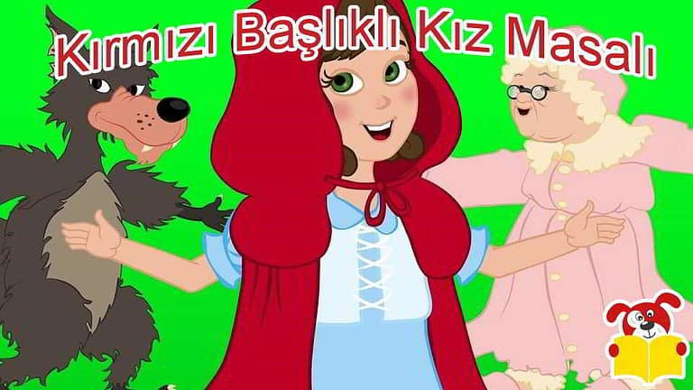
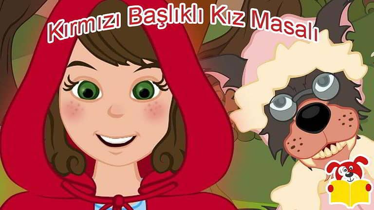
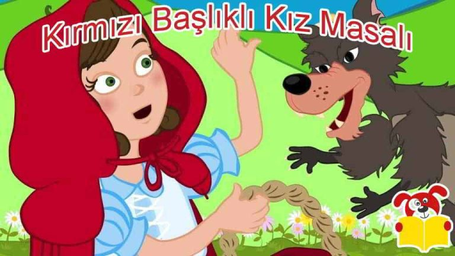
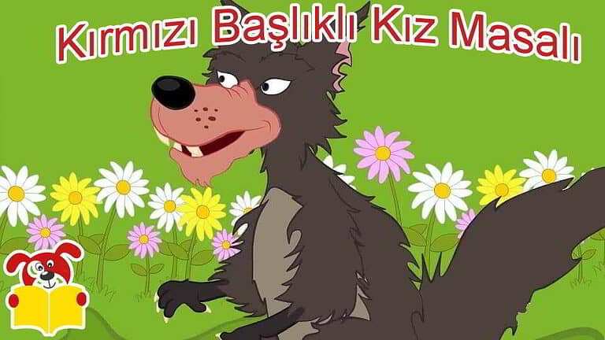

Bölüm 1
Evvel zaman içinde küçük ve çok tatlı bir kız varmış, her kim onu görürse şirinliği yüzünden ondan hoşlanırdı. Özellikle de büyükannesi onu o kadar çok severdi ki her onu ziyarete gittiğinde tekrar gelmesini söylerdi. Bir gün torununu ziyaret etmeye gittiğinde ona kırmızı kadifeden yapılmış bir başlık hediye etti. Bu başlık küçük kıza o kadar yakışmıştı ki, o günden sonra onu başından çıkarmaz oldu. Bu yüzden de çevresinde onu tanıyan herkes ona Kırmızı Başlıklı kız demeye başladı. Bir gün annesi onu yanına çağırarak, “Güzel kızım, şu kurabiyeyle şerbeti büyükannene götürür müsün? İki gündür hasta; daha bir şeyler yememiştir.” Küçük Kız “tabii ki annecim bende zaten onu çok özlemiştim.” Kırmızı başlıklı kız annesinin hazırladığı yiyecekleri sepete koyarak evden çıkacağı esnada annesi “Tavşan ormanındaki yoldan sakın ayrılma kızım” diye seslenmiş.
Bölüm 2
Küçük kız “tamam annecim sen merak etme beni” diyerek yola koyulmuş. Büyükannesinin evine yürüyerek yarım saatte gidiliyordu. Kırmızı başlıklı kız ormanda neşe içinde şarkılar söyleyerek yürüyormuş. Bir ara kendi kendine “buraya neden tavşan ormanı diyorlar acaba, yol boyunca hiç tavşan görmedim” diye söylenmiş. Sonra da durmadan yoluna devam etmiş. Bir süre sonra çiçeklerle dolu bir yere ulaşmıştı. Orada rengârenk çiçekler olduğunu görünce, “Anneanneme birazda çiçek toplayayım, görünce çok sevinir.” demiş. Kırmızı başlıklı kız çiçekleri toplarken tavşan yolundan uzaklaştığını hiç fark etmemişti bile, bir ara çalılıkların arasından gelen bir ses duymuş. Çiçek toplamayı bırakıp etrafına bakınırken birden önüne bir kurt atlamış. Kırmızı başlıklı kız kurdu karşısında görünce korkudan elindeki sepeti yere düşürmüş. Kurt ise hemen sepetten dökülen kurabiyeleri toplayarak küçük kıza uzatmış. Küçük kız kurdun bu hiç beklenmedik davranışından dolayı çok şaşırmıştı. Çekingen bir tavırla; “Teşekkür ederim.” Demiş. Kurt “Tek başına böyle nereye gidiyorsun küçük kız” diye sormuş. Kırmızı başlıklı kız: “Anneannemin yanına gidiyorum, tavşan yolunun sonundaki sarı renkte bir ev varya onun evi orası, birkaç gündür hastaymış, ona yiyecek bir şeyler götürüyorum. Kurt: “Bu kız tamda dişime göre; kurnaz davranırsam ikisini de ele geçiririm” diye aklından geçirmiş. “Küçük kız sen rahat rahat çiçeklerini topla, ben zaten o tarafa gidiyorum. Anneannene biraz gecikeceğin haberini veririm.”
Bolum 3
O esnada silah sesini işiten kurt, hızla kızın yanından uzaklaşmış. Kız biraz daha çiçek toplarken onun yanına gelen avcı. “Güzel kız tek başına buralarda ne arıyorsun, buralar senin gibi küçük bir kız için tehlikeli olabilir. Gel seni gideceğin yere bırakayım.” Demiş Bu arada kurt, hızlıca yaşlı kadının evine giderek kapısını çaldı. Yaşlı kadın “Kim o?” “Benim; torunun, sana kurabiyeyle şerbet getirdim anneanne, kapıyı açar mısın.” “Kapı açık yavrum, çok halsizim, ayağa kalkamıyorum” diye cevap verdi. Kurt, kapıyı açtığı gibi yaşlı kadını yakalayıp arka odaya kilitledi. Sonrada onun giysilerini giyinerek perdeleri kapattı. Daha sonrada yatağa girerek küçük kızı beklemeye başladı. Biraz sonra küçük kız ve avcı anneannenin evine ulaşmışlardı. Avcı “hadi bakalım küçük kız, biran önce anneannenin yanına git” demiş. Kırmızı başlıklı kız avcıya teşekkür ettikten sonra, avcı yoluna devam etmiş. Kırmızı başlıklı kız anneannesinin kapısını çalmış. İçeriden bir ses “Kim o?” “Benim anneanne kapıyı açar mısın?” “Kapı açık güzel kızım, içeri girebilirsin.” Küçük kız, biran için tereddüt etmiş çünkü duyduğu ses anneannesinin sesine pekte benzemiyormuş. Sonrada anneannesinin hasta olduğu aklına gelmiş: Kendi kendine “anneannem hasta olduğu için sesi böyle çıkıyor herhalde” demiş. Kırmızı başlıklı kız kapıyı açmış ve içeri girmiş. Kurt anneannenin geceliğini giymiş, başlığını ve gözlüklerini takmış, yatakta yatıyormuş. İçerisi karanlık olsun ve küçük kız kendisini tanımasın diye de perdeleri çekmişti.
Bolum 4
“Güzel kızım buraya kadar yorulup bana yiyecek getirdiğin için teşekkür ederim. Yanıma gel de seni biraz seveyim. Yaklaş kızım. Biraz daha yaklaş,” demiş. Küçük kız elindeki sepeti bir kenara bırakmış ama yatağa çok fazla yaklaşmamış. Çünkü anneannesi ona farklı görünüyormuş. “Anneanne senin kolların neden bu kadar uzun” diye sormuş. “Seni daha iyi kucaklamak için.” “Kulakların neden bu kadar büyük peki?” “Seni daha iyi duyabilmek için.” “Gözlerin neden bu kadar kocaman peki?” “Seni daha iyi görebilmek için.” “Hımm, dişlerin neden bu kadar sivri peki anneanne?” diye sormuş Kurt: “Seni daha iyi yiyebilmek için” diyerek, yataktan fırlamış ve kızın üstüne atlamış. “İmdat diye bağırmış” kırmızı başlıklı kız ve o anda yatakta yatanın anneannesi değil, yolda karşılaştığı kurt olduğunu anlamış. Avcı kırmızı başlıklı kızın çığlığını duymuş ve hemen eve doğru koşmuş. Açık olan kapıdan içeri dalmış ve hemencecik kurdu yakalamış. “Nihayet seni yakaladım, pis kurt. İşte elimdesin.” Avcı, anneanneyi de kurtarmış. Küçük kız “bizi kurtardığın için teşekkür ederim avcı amca” demiş. “Bir şey değil! Ama bir daha sakın annenin sözünden dışarı çıkma küçük kız” demiş avcı. Anneanne, kırmızı başlıklı kızın getirdiği kurabiyeleri yemiş şerbeti de içmiş, sonrada şifalı bitkileri kaynatıp suyunu içmiş ve hemen iyileşmiş. Küçük kız, anneannesine bir daha hiçbir kurdun sözüne kanmayacağına dair söz vermiş. Kırmızı başlıklı kız ormanda neşe içinde şarkılar söyleyerek yürüyormuş. Yolda tekrar kurda rastlamış. Avcının ormanı temizleme cezası verdiği kurt onu görünce yaptığından çok utanmış. Tavşan ormanı yine eskisi gibi tavşanlarla dolu cıvıl cıvıl neşeli bir orman olmuş.